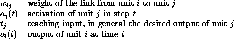
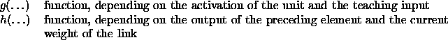
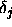
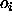
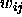
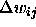
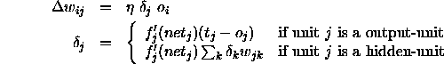
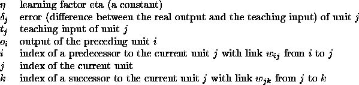

An important focus of neural network research is the question of how to adjust the weights of the links to get the desired system behavior. This modification is very often based on the Hebbian rule, which states that a link between two units is strengthened if both units are active at the same time. The Hebbian rule in its general form is:
where:


Training a feed-forward neural network with supervised learning consists of the following procedure:
An input pattern is presented to the network. The input is then propagated forward in the net until activation reaches the output layer. This constitutes the so called forward propagation phase.
The output of the output layer is then compared with the teaching input. The error, i.e. the difference (delta)

between the output and the teaching input
and the teaching input  of a target output unit
j is then used together with the output
of a target output unit
j is then used together with the output 
of the source unit i to compute the necessary changes of the link
. To compute the deltas of inner units for which no teaching input is available, (units of hidden layers) the deltas of the following layer, which are already computed, are used in a formula given below. In this way the errors (deltas) are propagated backward, so this phase is called backward propagation.In online learning, the weight changes

are applied to the network after each training pattern, i.e. after each forward and backward pass. In offline learning or batch learning the weight changes are cumulated for all patterns in the training file and the sum of all changes is applied after one full cycle (epoch) through the training pattern file.The most famous learning algorithm which works in the manner described is currently backpropagation. In the backpropagation learning algorithm online training is usually significantly faster than batch training, especially in the case of large training sets with many similar training examples.
The backpropagation weight update rule, also called generalized delta-rule reads as follows:

where:

There are several backpropagation algorithms supplied with SNNS: one ``vanilla backpropagation'' called Std_Backpropagation, one with momentum term and flat spot elimination called BackpropMomentum and a batch version called BackpropBatch. They can be chosen from the control panel with the button and the menu selection select learning function.
In SNNS, one may either set the number of training cycles in advance or train the network until it has reached a predefined error on the training set.